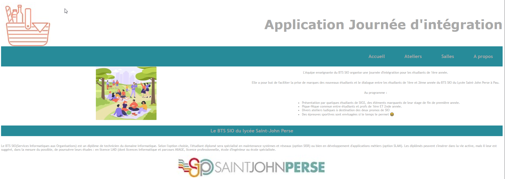
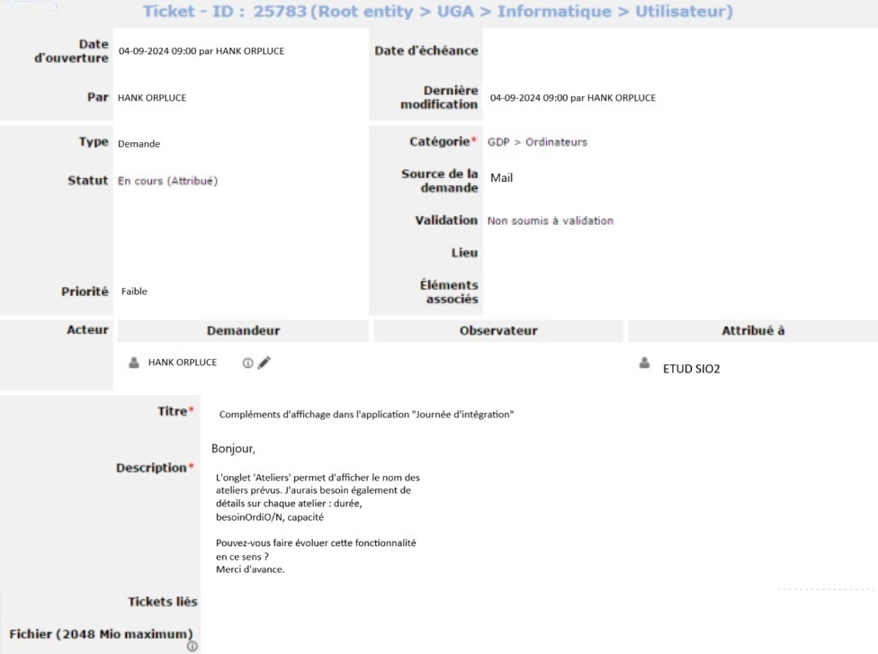
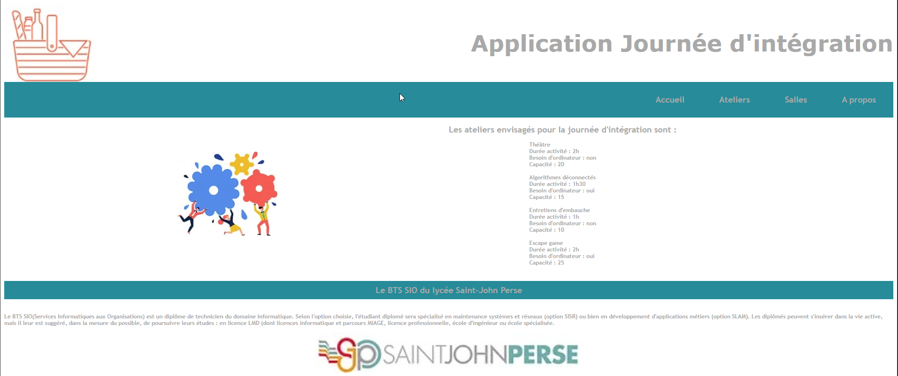

Journée d'intégration
Développement PHP MVC & Patron DAO
Développement d'une application web PHP pour la gestion des ateliers de la journée d'intégration PICNIC du BTS SIO.
Refactoring complet vers le patron de conception DAO avec tests unitaires PHPUnit et documentation phpDocumentor.

🎯 Contexte & Objectifs
Le BTS SIO du lycée Saint-John Perse de Pau organise chaque année une journée d'intégration PICNIC pour les nouveaux étudiants. L'objectif est de les accueillir autour d'activités communes.
Dans ce cadre, l'atelier consistait à développer une application web PHP pour afficher et gérer les ateliers proposés lors de cette journée, en suivant une architecture MVC claire, puis en faisant évoluer le code vers un patron DAO plus robuste et maintenable.
Mission Principale :
- Conception : Application PHP en architecture MVC
- Refactoring : Application du patron de conception DAO pour séparer l'accès aux données de la logique métier
- Tests & Doc : Mise en place de tests unitaires PHPUnit et génération de documentation via phpDocumentor
✨ Évolution de l'Application
V1 : Architecture MVC PHP
Architecture Modèle-Vue-Contrôleur, routage par paramètre GET. Lecture des ateliers depuis un fichier XML via SimpleXML et des salles via JSON. Connexion PDO avec gestion des erreurs.
V2 : Base de Données & DAO
Séparation nette de la logique d'accès aux données de la logique métier en utilisant le patron de conception DAO. Gestion des droits d'accès à la base de données selon le rôle.
Documentation & Tests
Génération automatique de la documentation depuis les commentaires PHPDoc. Mise en place de tests unitaires PHPUnit pour un code robuste et validé.

Tickets GLPI traités : Les demandes et incidents ont été soumis via GLPI par des utilisateurs fictifs.

Liste des ateliers chargée depuis le fichier XML (4 ateliers PICNIC).
🎓 Résultats & Apprentissages
Cet atelier m'a permis de consolider l'architecture MVC en PHP et de découvrir le patron DAO, qui sépare nettement la logique d'accès aux données de la logique métier.
La gestion des droits d'accès à la base de données selon le rôle (JI_Dev_Read) m'a sensibilisée aux bonnes pratiques de sécurité dès la conception.
La mise en place de tests unitaires PHPUnit et la génération de documentation phpDocumentor m'ont donné une vision complète du cycle de développement professionnel : conception, codage, test et documentation technique.
Compétences BTS SIO validées :
- B2.1 Concevoir et développer une solution applicative
- B2.2 Réaliser les tests de validation d'une solution
- B2.3 Rédiger la documentation technique
- B1.4 Travailler en mode projet
- B1.1 Gérer le patrimoine informatique